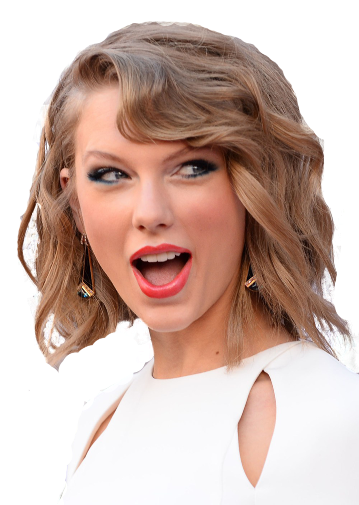
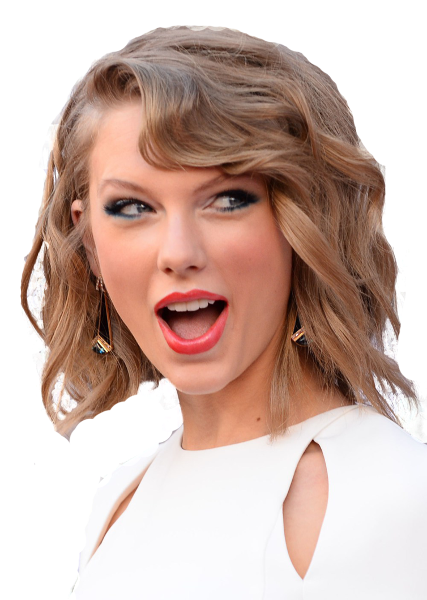

Summer 2018
I began my exploration into tech when I coded my first website to display my photography portfolio in high school; my passion for coding and computer science grew from here!


I began my exploration into tech when I coded my first website to display my photography portfolio in high school; my passion for coding and computer science grew from here!
I decided to pursue my interest in computer science by committing to Rutgers University, where I have been able to learn a vast amount about applications of programming
Through my Intro. to CS and Data Structures courses, I was able to develop a clear understanding of Java.

I learned Python and created a project that visualizes suicides in India to bring light to mental health.


I learned C and some fascinating information on the rise of A.I.! Check out my favorite article that sums up one of my favorite classes I took - "Minds, Machines, and Persons." I also became a tutoring fellow to help increase STEM academic achievement in K-12 classrooms.

I learned more about DevOps and regression testing during my first internship this summer. I also traveled to Europe for the first time and discovered my favorite book - Little Women!

I learned SQL and built an interactive ecommerce website! I also learned Hindi, which was a big goal of mine, and travelled to Boston.

I learned C#, and more about complex systems and solution packages during my second software engineering internship. I also fell in love with photography and Taylor Swift all over again! More TBA!
 
